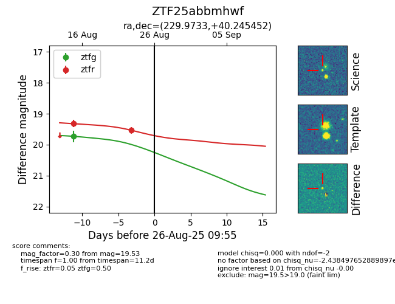

Target ZTF25abbmhwf at 2025-08-26 09:55, see:
FINK: fink-portal.org/ZTF25abbmhwf
Lasair: lasair-ztf.lsst.ac.uk/objects/ZTF25abbmhwf
ALeRCE: alerce.online/object/ZTF25abbmhwf
alt names
ZTF25abbmhwf (ztf,fink)
coordinates:
equatorial (ra, dec) = (229.9733,+40.24545)
galactic (l, b) = (65.7873,+56.75201)
photometry
last ztfg=19.73, ztfr=19.53
1 ztfg, 2 ztfr detections
